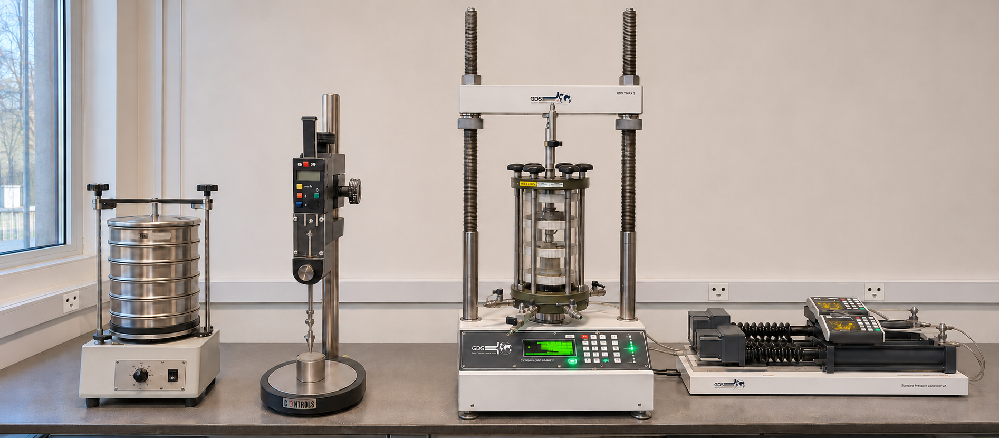

Emneområde A
Jords karakterisering og mekaniske egenskaber
Fra jordprøve og klassifikation til deformation og styrke.

Jordtyper og tilstandsparametre
Lær at beskrive jorden og dens sammensætning.
Planlagte emner · øvelser kommer senere
- Jordtyper og klassifikation
- Kornkurver og konsistensgrænser
- Faseforhold, vandindhold og poretal
Deformation og konsolidering
Undersøg sammenhængen mellem belastning, deformation og tid.
Forskydningsstyrke
Sammenhold skæreboksforsøg, triaksialforsøg, Mohr-cirkler og spændingsstier.